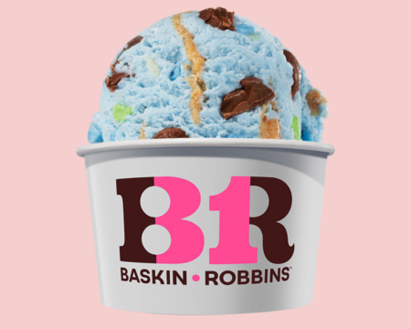

Featured Ice Cream
Beach Day
ABOUT US
Named the top ice cream and frozen dessert franchise in the United States by Entrepreneur magazine’s 31st annual Franchise 500® ranking, Baskin-Robbins is the world’s largest chain of ice cream specialty shops. Baskin-Robbins creates and markets innovative, premium ice cream, specialty frozen desserts and beverages, providing quality and value to consumers at more than 6,700 retail shops in nearly 50 countries. Headquartered in Canton, Mass., Baskin-Robbins is part of the Dunkin’ Brands Group, Inc. (Nasdaq: DNKN) family of companies.